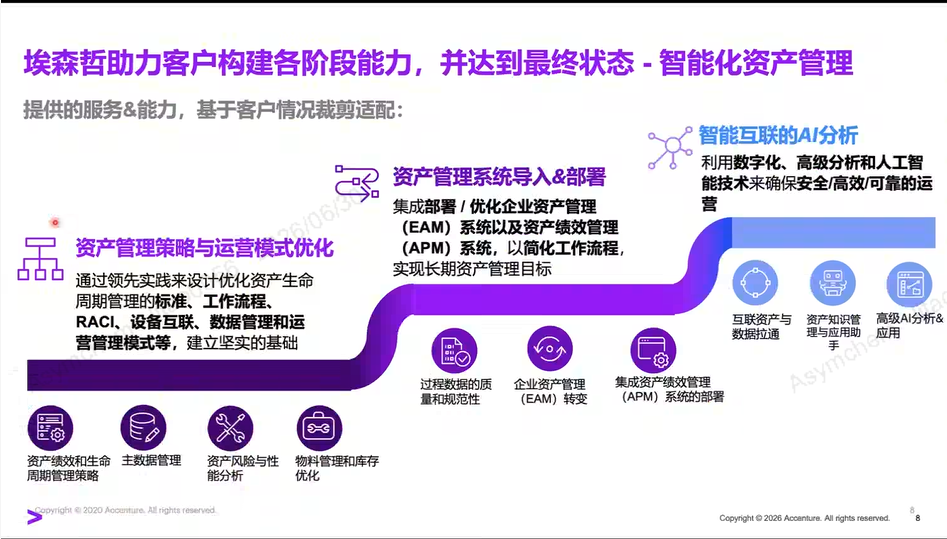
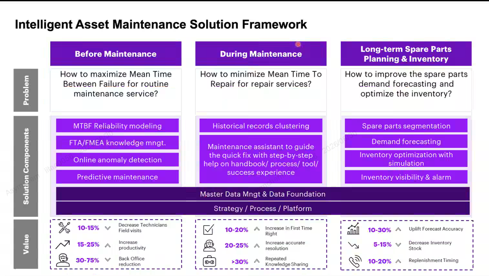
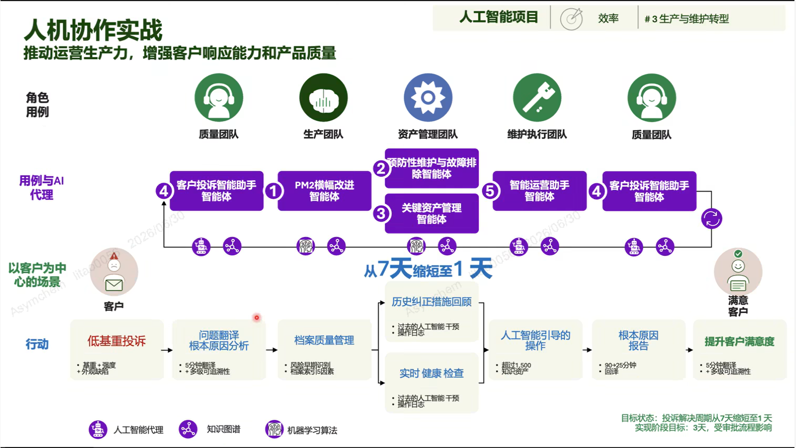
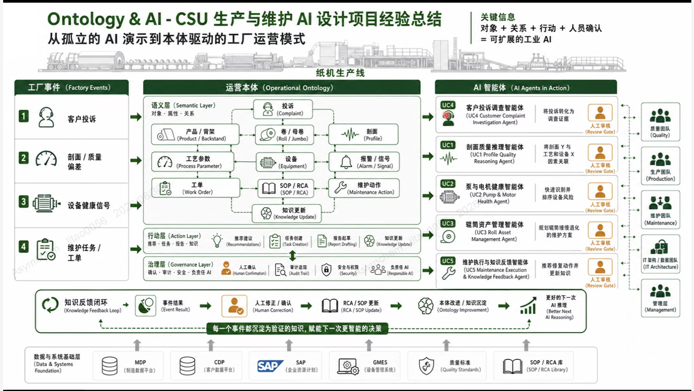
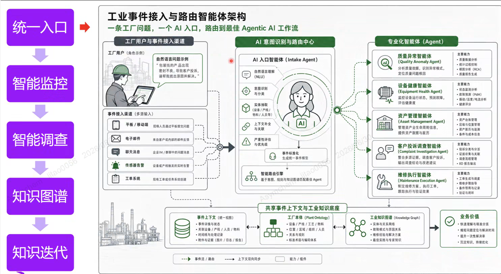
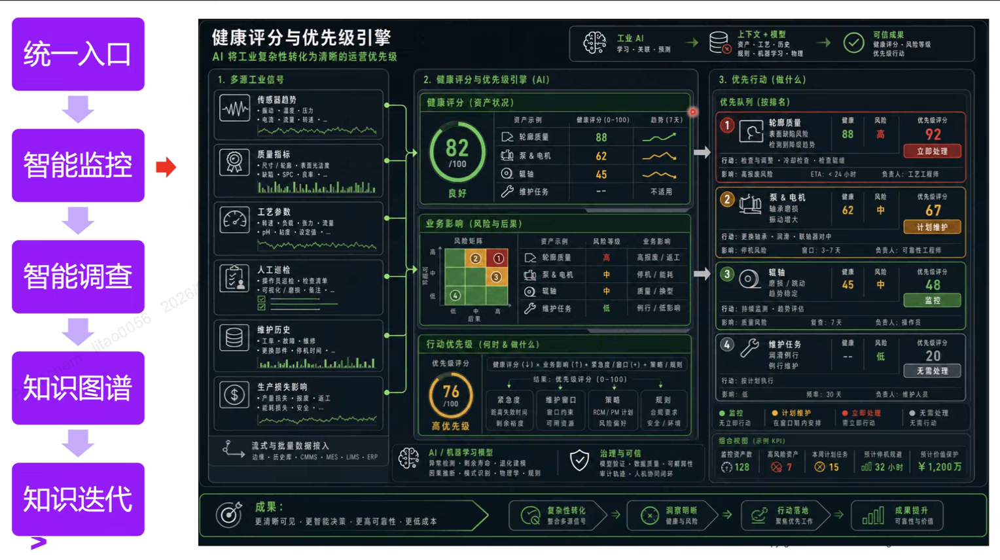
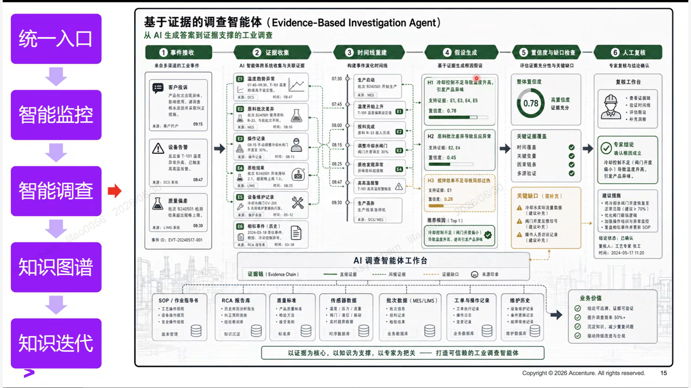
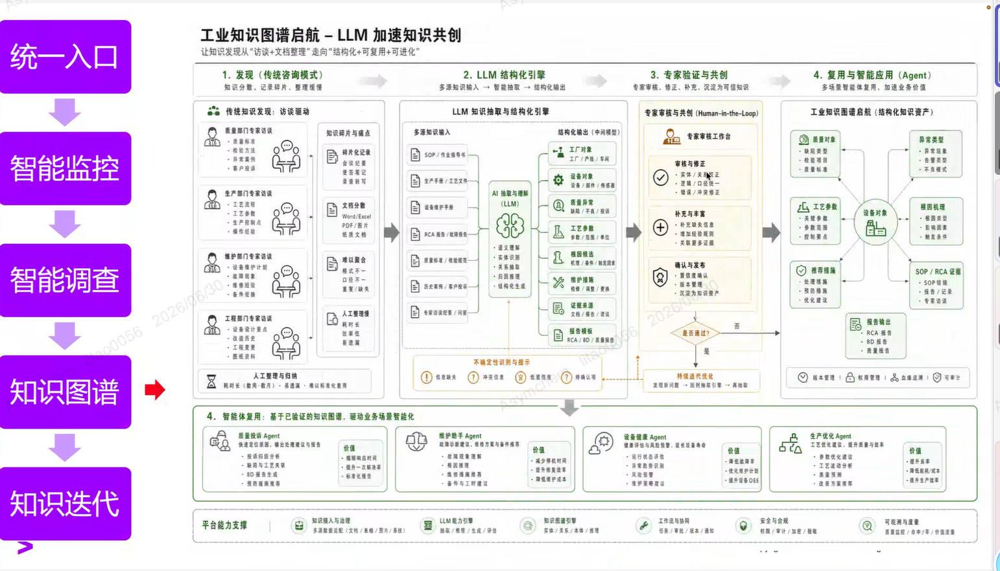

MEETING SUMMARY · 2026-06-30
凯莱英 × 埃森哲 设备预测性维护方案讨论
会议总结报告
PART 01 · 会议背景与议题
凯莱英探索设备预测性维护落地路径 · 邀请埃森哲做方案讨论
1.1 与会方
- David（孙晨）· 会议组织 / 凯莱英对接
- 王亮 · 生产负责人
- 李涛博士 · AI 生产负责人
- 徐工 · CDT（设备相关）
- 高主管、陈永新主管 · 设备部
- 其他生产 / 设备部同事
- 胡大伟（David Hu）· 生命科学行业线
- 刘博言（Po · 坡哥 / 刘鹏）· 架构师
- 李新贵（新贵）· 总方案交付 / AI 与设备方案专家
1.2 会议议程
- 埃森哲公司与 Industry X 团队介绍（约 5 分钟）— 由刘博言介绍
- 埃森哲在设备管理领域的服务能力（约 5 分钟）— 由李新贵介绍
- "智能化资产管理"方法论与三段框架（约 10 分钟）— PPT 1-2
- 典型客户案例分享（约 20 分钟）— 从资产管理切入到端到端价值的完整闭环（PPT 3-9）
- 凯莱英需求讨论 · 设备预测性维护具体场景（约 30 分钟）— 天津厂区动力系统、风机轴承等
- 下一步行动（约 5 分钟）— 凯莱英整理设备清单 / 数据 / 先验知识后再约会议
1.3 凯莱英方明确的本次会议聚焦点
会议过程中，凯莱英方明确将议题聚焦在"设备预测性维护"这一个具体场景上， 避免范围扩大到全面 AI 战略 / 端到端业务变革。这一聚焦也获得了埃森哲方的认同。
PART 02 · 埃森哲公司与 Industry X 团队
全球 80 万员工的咨询 + 集成商 · Industry X 专门服务制造型企业
以下数据为会议中埃森哲方（刘博言）口头介绍的公司规模与服务体系。本节内容为埃森哲自述。
2.1 公司规模（埃森哲自述 · 2025 财年）
2.2 埃森哲面向客户的五大业务组织（埃森哲自述）
| 业务组织 | 服务范围 |
|---|---|
| 战略咨询服务 | 对于客户需要做战略以及咨询服务方面 |
| 技术服务团队 | 对战略服务往下落地，有各种软件、平台、云或者 AI 的技术实现 |
| 智能运营团队 | 实施之后的长期运营，譬如财会运营或人力运营 |
| Industry X（工业 X） | 专门服务制造型企业、生产制造型企业，围绕大的供应链需要都可以支持 · 本次合作的对应团队 |
| 营销 / 销售渠道 | 市场推广或者市场设计 |
2.3 Industry X 在制造业的服务范围（埃森哲自述）
从产品最源头的客户需求 → 设计工程 → 生产 + 供应链 → 产品服务支持 → 创新与成长整条价值链。 会议中给出的具体案例：星巴克全球创新体验中心（苏州）即埃森哲帮忙设计建立，提供给星巴克 to B 以及 to C 的客户对于咖啡体验的一个历程。
PART 03 · 埃森哲在设备管理的服务能力
三段式服务体系 · 当前重心在第三段"AI 应用"
由埃森哲方（李新贵）介绍的服务体系。三段服务可独立交付，也可组合交付。
埃森哲方表述："有一些很有经验的专家"。
主要含 EAM / APM 等资产管理系统的导入部署。
近期项目普遍集中在第三段。
3.1 智能化资产管理的演进路径（埃森哲方法论）
埃森哲在 PPT 中将"智能化资产管理"分为三个阶段，根据客户情况裁剪适配：

3.2 价值来源（埃森哲方表述）
- 降低 OEE 损失
- 降低瓶颈工序停机时间，提升产能
- "过往项目里价值最大的部分"
- 但近两年因产能过剩有折扣
- 无形：人员效率、时间消耗、劳动效率
- 有形：备品备件、停机带来的电量损失等
- 资产利用率（备件有寿命，3-5% 提升对应百万级回报）
- 产品使用生命周期延长
- 运维部门是基础部门
- 定性贡献以往很少量化，埃森哲方案会去定性 / 部分定量
- "PAA"（基本无接触）减少现场走动 → 安全提升
PART 04 · 智能资产管理解决方案框架
Before / During / Long-term 三段维护 + 价值指标
埃森哲方 PPT 中的核心方法论框架 · 含三段维护组件 + 价值指标范围。

4.1 三段维护的问题定义与解决组件（按 PPT 内容直引）
| 阶段 | 问题（Problem） | 解决组件（Solution Components） | 价值指标范围（Value） |
|---|---|---|---|
| Before Maintenance （运营前 · 提高可靠性） |
How to maximize Mean Time Between Failure for routine maintenance service? |
• MTBF Reliability modeling • FTA / FMEA knowledge mngt. • Online anomaly detection • Predictive maintenance |
↓ 10-15% 技术人员现场访问 ↑ 15-25% 生产力 ↓ 30-75% 后台压力 |
| During Maintenance （运维中 · 缩短修复时间） |
How to minimize Mean Time To Repair for repair services? |
• Historical records clustering • Maintenance assistant to guide the quick fix with step-by-step help on handbook / process / tool / success experience |
↑ 10-20% First Time Right ↑ 20-25% 准确解决率 ↑ > 30% 重复知识共享 |
| Long-term Spare Parts （长期备件规划） |
How to improve the spare parts demand forecasting and optimize the inventory? |
• Spare parts segmentation • Demand forecasting • Inventory optimization with simulation • Inventory visibility & alarm |
↑ 10-30% 预测准确性 ↓ 5-15% 库存 ↑ 10-20% 补货时机 |
- Master Data Mgmt & Data Foundation（主数据管理与数据基础）— 所有上层应用的底座
- Strategy / Process / Platform（战略 / 流程 / 平台）— 配套机制
注：以上价值指标范围为埃森哲 PPT 给出的"过往项目结果区间"，未明确客户名称、行业、规模，仅作参考。
PART 05 · AI 智能体架构与典型案例
从资产管理切入 → 端到端业务闭环 · 5 大 AI 智能体协作
本节内容来自埃森哲方 PPT 3-9 及李新贵的案例讲解。该案例的客户行业 / 名称未在会议中披露，仅以"某客户"指代。
5.1 端到端价值闭环（PPT 3-4）
埃森哲展示了一个"从客户投诉到改进反馈"的完整闭环，涉及 5 大 AI 智能体协作：

| 编号 | 智能体 | 所属团队 | 核心职责（按 PPT 内容） |
|---|---|---|---|
| ① | PM2 横幅改进智能体 | 生产团队 | 持续改进 / 生产流程优化 |
| ② | 预防性维护与故障排除智能体 | 资产管理团队 | 本次讨论核心相关 · 预测性维护 + 故障排查 |
| ③ | 关键资产管理智能体 | 资产管理团队 | 关键资产健康监控 |
| ④ | 客户投诉智能助手智能体 | 质量团队 | 客户投诉调查转化为证据 |
| ⑤ | 智能运营助手智能体 | 维护执行团队 | 协调全厂资源、快速找文档、生成维修报告、知识沉淀 |
- 客户投诉解决周期：从 7 天缩短至 1 天（目标状态：3 天 · 受审批流程影响）
- 问题翻译 / 根本原因分析：5 分钟翻译 + 多极可追溯性
- 根本原因报告：90 + 25 分钟回译（PPT 数据原文）
- 历史纠正措施回顾：过去的 AI 干预操作日志
5.2 Ontology & AI · 本体驱动的工厂运营模式（PPT 5）
埃森哲方表述："从孤立的 AI 演示到本体驱动的工厂运营模式"。案例为某纸机生产线客户。

对象 + 关系 + 行动 + 人员确认 = 可扩展的工业 AI
- 客户投诉（Complaint）
- 剖面 / 质量偏差（Profile / Quality）
- 设备健康信号（Equipment Health Signal）
- 维护任务 / 工单（Maintenance Task / Work Order）
- 语义层 Semantic Layer：产品 / 背架、工艺参数、设备、SOP / RCA、报警 / 信号、知识更新、维护动作
- 行动层 Action Layer：推荐建议、任务 / 报告、知识更新
- 治理层 Governance Layer：人工确认、审计追踪、安全和权限、负责任 AI
数据与系统基础（Data & Systems Foundation）：MDP（制造数据平台）/ CDP（客户数据平台）/ SAP / GMES（设备管理系统）/ 质量标准 / SOP·RCA 库
5.3 5 层架构 · 工业事件接入与路由智能体（PPT 6）

5.4 健康评分与优先级引擎（PPT 7）

- 传感器趋势（振动 / 温度 / 压力 / 电流 / 流量 / 转速）
- 质量指标（尺寸 / 重量 / 外观 / SPC / 良率）
- 工艺参数（温度 / 压力 / 流量 / pH / 粒度）
- 人工巡检 / 点检 / 维修记录
- 生产损失影响（业务后果评估）
- 每个设备 / 部件都有自己的健康分
- 0-100 评分体系（PPT 案例：辊筒质量 88 / 泵及电机 62 / 辊轴 45）
- 对应风险等级（高 / 中 / 低）
- 业务影响矩阵（4×4 风险-后果矩阵）
- 优先队列（按业务后果排名）
- 4 档处置：立即处理 / 计划维护 / 监控 / 无需处理
- 建议项含 ETA、关键事件、责任人
- PPT 案例底部 KPI：低度风险 128、高风险 7、近期工单 15 等
5.5 基于证据的调查智能体（PPT 8）

PPT 案例：整体置信度 0.78 · 业务价值标注 "提升调查效率 50%+ / 沉淀知识 / 推动持续改进"
5.6 工业知识图谱启航 · LLM 加速共创（PPT 9）

PART 06 · 设备预测性维护的开展思路
埃森哲方主张的"PdM 项目可行性判断 4 维度"
本节内容综合自李新贵和刘博言（坡哥）在讨论中给出的关于"如何判断一个 PdM 项目是否能做、怎么做"的具体思路。
6.1 项目可行性判断 4 维度
埃森哲方多次强调，判断一个 PdM 项目是否可做，需要凯莱英方先给出以下 4 类信息：
- 是什么产业设备（设备类型 / 关键作用）
- 主要面临的问题（故障类型 / 频次 / 损失）
- 埃森哲建议先按"损失"或"OEE"排出 Top 5 类故障
- 现有传感器（震动 / 温度 / 电流 / 压力 / 流量 等）
- 采集频次、历史归档时长（是否有 5 年 / 1 年 / 3 个月数据）
- 当前监测手段（人工巡检 / 在线监测 / DCS）
- 这个设备坏可能跟哪些因子（A、B、C、D）有关
- 故障类型分类（物理模型 / RCA 报告 / 偏差报告）
- 过往 5 Why / FTA / FMEA 分析
- 近 5 年 / 1 年 / 半年坏过几次
- 每次故障的特征数据是否有保留
- "如果几乎不坏 → 项目论证就难"
6.2 数据基础与解题思路
| 情况 | 埃森哲方应对 |
|---|---|
| 有完整历史数据（含坏批数据） | 直接做"特征发现 + 多因子回归 + 命中率验证" → 拍胸脯告诉领导能做 |
| 有完整历史数据但故障样本少 | "训练出来的模型不一定特别好用" · 需结合行业经验和前训练模型 |
| 没有历史数据但有先验经验 | 说服领导先装传感器跑 3-6 个月，可能这期间不一定坏 · 风险共担 |
| 没有历史数据也没有先验（两眼一摸黑） | "那可能上了 AI，它也是无水，解决不了问题" · 不推荐立项 |
6.3 关于"行业模型能否复用"的讨论
凯莱英方提问：能否复用其他客户（行业内）的物理模型和数据，弥补自身数据不足？埃森哲方的回答如下：
换言之，埃森哲方的立场是： "前训练模型 + 计算方法" 埃森哲有储备 → 可以加速； "后训练" 必须在凯莱英自己的设备数据上做 → 凯莱英自身数据仍是关键。
6.4 算法层面的具体讨论
- 会议中提及的具体模型：REMAN（疑为 RUL Estimation 模型类）、LSTM（时序模型）
- 凯莱英方反馈："LSTM 现在不是 attention is all you need 吗，这个感觉会稍微老一点"
- 埃森哲方回应：实际算法由 Data Scientist 团队基于先验知识选择，自己不是算法专家
- "不是这种黑箱的推荐"
- 报警时要能给出：故障类型 + 严重程度 + 证据 + 处置建议
- 不是单纯一个"健康度"分数
- 需要可解释性 → 这是会议中明确的需求
李新贵说明：通过知识图谱建模——将"一个偏差/异常 → 哪些故障代码 → 哪些部件 → 哪些特征" 预先建模成"业务本体"，AI 给出预测后用知识图谱解释根因和处置建议。建模来源包括： RCA 报告、偏差报告、供应商文件、过往人的经验。这一逻辑跟 PPT 9 的"工业知识图谱启航"对应。
6.5 项目论证的"反向思考"
这是埃森哲方多次提到的"反向逻辑"：如果设备维护得太好（几乎不坏），那项目本身的必要性需要重新论证。 凯莱英方在会议中未对此做明确表态，建议会后内部评估。
PART 07 · 埃森哲能为凯莱英做什么
4 种合作模式 · 范围与定价跟随凯莱英的具体诉求
埃森哲方（刘博言）在会议中明确给出的 4 种合作模式，凯莱英方可根据自身情况裁剪。
| 合作模式 | 范围 | 埃森哲提供什么 | 原话佐证 |
|---|---|---|---|
| ① 单一交付（交钥匙） | 围绕一个 OEE 指标 / 一类设备工艺问题 | 点到点交付 · 含硬件采购（如传感器）+ 软件 + 数据建模 + 模型训练 | "如果你们觉得交钥匙工程的，就是你们可能就围绕一个 OEE 的指标，或者围绕一类设备工艺问题，那埃森哲就是点到点的交钥匙" |
| ② 总集成（多 AI 项目） | 多个 AI 项目跨厂商集成 | 项目群管理 + 跨厂商集成 + 总集成商角色 · 含买硬件（传感器）+ 买软件（微软 / 阿里 LLM 平台）+ 自有数据科学家加持 | "埃森哲总的一个大的身份肯定是一个大集成商。我们会买硬件，比如说像传感器，也会去买软件，比如说现在像微软也好，或者说是阿里也好，它本身有机器学习" |
| ③ 战略咨询 | 集团 AI 战略路线 / 选型 / 变革管理 / 培训体系 | 战略蓝图 + 路径设计 + 项目卡片 · 含 workshop 短期生产域全域扫描（"1-2 个月"） | "如果你说老板对于怎么用 AI 来提升大家的工作效率，为凯莱因在下一轮的 AI 竞争里面储备这些能力，那埃森哲肯定是能做的" |
| ④ 单一 AI 应用建模 | 已有传感器数据，缺建模能力 | 纯算法服务 · 数据建模 + 找特征 + 线性回归 + 模型上线后的流程变革 | "你们可能已经传感器的东西已经装得差不多了，只是守着一些好的数据……不知道怎么去把它建成 AI 或者机器学习可以用的模型，那埃森哲其实就是做模型，以及做未来的 AI 上线之后的流程变革" |
7.1 埃森哲在 PdM 项目中的定位（自述）
- 埃森哲不卖传感器（区别于西门子、艾默生），但可以采购集成第三方传感器
- 埃森哲不持有 LLM 基础模型，但可以集成微软 / 阿里 / 华为等大模型
- 埃森哲主要卖的：行业顾问能力 + 知识图谱建模 + 模型训练 + 流程变革
- 埃森哲有 Data Scientist 团队，会做时序、单因子、多因子、回归等具体算法
7.2 埃森哲建议的"项目走法"建议
会议结尾时，双方达成的共识是"先把范围限定在设备预测性维护"， 避免一次性拉太大。后续若效果良好，再讨论其他 AI 方向。
PART 08 · 关于 CDMO 行业的关键讨论
药明案例参考 · 客户隔离 · GMP 验证 · 监管现状
凯莱英方主动提出的 CDMO 行业特殊性问题，埃森哲方做了直接回应。本节直接引用对话内容。
8.1 CDMO 行业案例
凯莱英方询问埃森哲在 CDMO / CRO 行业的案例情况。
8.2 CDMO 模型训练 / 客户隔离的关键矛盾
凯莱英方主动提出 CDMO 客户数据 / 模型权重隔离问题。
"设备这个东西是你自己的，但工艺这个东西，到底算你来算客户的，这个我们要比较深入地去看。"
→ 对凯莱英的具体启示：本次议题"设备 PdM"是相对"安全"的切入点 —— 设备数据归凯莱英所有，模型训练不涉及客户工艺。但若未来扩展到工艺优化 / 良率提升等方向， 则会触及客户数据 / 模型权重归属的商业政策问题。
8.3 GMP 验证 / 监管现状
凯莱英方询问 GMP / GxP 合规验证 + AI 的处理思路。刘博言主动提到他参与了相关法规研究。
8.4 关于"AI 报告生成" + 既有系统对接（Veeva 等）
凯莱英方询问 AI 能否辅助生成偏差报告、变更等。
📌 注：刘博言提及凯莱英现有 SAP（之前由德勤实施）+ Veeva（QMS / EDMS）系统基础，认为"数字化层面凯莱英现在基础是非常好的"。
PART 09 · 凯莱英具体 PdM 场景的讨论
天津厂区动力系统 + 净化空调风机轴承 · 现状与可行性问答
本节内容为会议后半段凯莱英方介绍的具体设备场景 + 双方就该场景做的可行性讨论。
9.1 凯莱英方提出的具体 PdM 候选场景
- 净化空调的风机轴承（现状：预防性维护，定期打大油）
- 动力系统的大泵（含离心泵等）
- 动力系统的鼓风机 / 积风设备
- 动力系统电机（震动监测）
9.2 关于历史数据的关键讨论
埃森哲方追问凯莱英现有数据基础：
会议中凯莱英方未直接确认是否有完整的传感器历史数据。这是下一步会后整理的关键内容。
9.3 关于"先装传感器再跑数据"的讨论
- 若凯莱英已有 1+ 年的传感器历史数据（含震动 / 电流 / 温度），可直接做"特征发现 + 回归验证"
- 若没有数据但有先验经验，可"先装传感器 + 跑 3-6 个月再做回归"，但需领导决策授权
- 若"3-6 个月内设备一次都没坏"，则正样本仍然不足，需更长周期或借助行业前训练模型
9.4 凯莱英方对"输出形式"的明确要求
9.5 凯莱英方关于"行业数据复用"的设想
📌 注：本会议第一次出现"300 多台设备"这个数字，凯莱英方未明确指代哪个范围（单个厂区 / 整个集团 / 动力系统）。会后需澄清。
埃森哲方的回应（如 6.3 节）是"前训练有储备，后训练必须用凯莱英自己数据"， 而非直接复用其他客户数据训练参数。
PART 10 · 下一步行动（双方共识）
会后凯莱英整理 4 类信息 · 再约下一次会议
会议结尾处，双方就下一步明确了行动项。本节为客观行动清单，不做主观推断。
10.1 凯莱英方需会后整理的信息（按埃森哲方要求）
| 类别 | 具体内容 | 说明 |
|---|---|---|
| ① 设备清单 | 产线 / 厂区 + 设备类型 + 关键作用 + 数量 | 建议从天津厂区动力系统开始（如 PdM 候选清单） |
| ② 主要问题 | 按"损失"或"OEE"排序的 Top 5 类故障 + 频次 + 业务影响 | 埃森哲方原话："先把那五类故障排出来" |
| ③ 数据基础 | 现有传感器（震动 / 电流 / 温度 等）+ 采集频次 + 历史时长（5 年 / 1 年 / 3 月） + 异常案例数 | "故障类型背后能否讲出所以然来" · 含部件 / 电器 / 人为操作根因 |
| ④ 先验知识 | RCA 报告、偏差报告、FTA / FMEA 已有结果、供应商资料 | 用于建知识图谱解释性模型的基础 |
10.2 双方在会议中达成的明确共识
- 本次合作仅聚焦设备预测性维护，不扩展到全面 AI 战略
- 第一次合作"范围不宜过大" · 易于向上申请 + 易于推进
- 下一次会议聚焦"具体能不能做、怎么做"
- AI 输出不能是黑箱
- 报警时需附：故障类型 + 部位 + 证据 + 处置建议
- 埃森哲方将用知识图谱来实现解释性
10.3 会议中"未明确"或"待澄清"的事项
- 埃森哲方在 PdM 项目上的商务报价区间 / 计费方式（人天 / 包干 / 按效果分成）
- 埃森哲方在制药行业（API / CDMO）PdM 的具体案例（除 CSU 纸机案例外）
- 埃森哲方本地交付团队的具体名单（参与本项目的工程师）
- 凯莱英 IT / SAP / Veeva 现有系统与埃森哲方案的对接深度
- 凯莱英方"300 多台设备"指代范围
- 凯莱英现有传感器 / 历史数据完整度（震动 / 电流 / 温度 各覆盖率）
- PoC 阶段的具体投入预算上限（凯莱英方未明确表态）
- 项目知识图谱 / 模型权重的所有权归属（凯莱英 vs 埃森哲）
10.4 双方约定的下一步
附录
会议素材 · 术语对照 · 参考资料
A. 本总结基于的素材
- 语音转文字记录：
06-30设备预测性维护方案探讨.mp3.docx（约 22,700 字符） - 埃森哲方现场 PPT 截屏：
埃森哲/1.PNG~9.PNG共 9 张- PPT 1：Intelligent Asset Maintenance Solution Framework（三段维护框架）
- PPT 2：智能化资产管理路径（策略 → EAM/APM → AI 分析）
- PPT 3-4：人机协作实战 — 5 大 AI 智能体闭环
- PPT 5：Ontology & AI 纸机生产线案例（CSU）
- PPT 6：工业事件接入与路由智能体架构（5 层）
- PPT 7：健康评分与优先级引擎
- PPT 8：基于证据的调查智能体（Evidence-Based Investigation Agent）
- PPT 9：工业知识图谱启航 — LLM 加速知识共创
- 埃森哲完整介绍材料：
凯莱英-埃森哲AI能力与赋能制造.pdf（34 页 · 2026-05-13 提供 · 本次会议未全部覆盖）
📌 注：埃森哲方在会议中明示 PPT 截屏不全（"原则上是不能给你们看的，因为这是其他客户的东西"）， 部分案例细节本总结无法完全还原，仅基于已截屏内容引用。
B. 关键术语对照
| 术语 | 英文 / 出处 | 解释（基于会议讨论） |
|---|---|---|
| PdM | Predictive Maintenance | 预测性维护 · 本次会议核心议题 |
| Industry X | 埃森哲 Industry X 事业部 | 专门服务制造型企业的事业部 |
| TPM | Total Productive Maintenance | 全员生产维护 · 埃森哲第一段咨询服务的内容之一 |
| EAM | Enterprise Asset Management | 企业资产管理系统 |
| APM | Asset Performance Management | 资产绩效管理系统 |
| MTBF | Mean Time Between Failure | 平均无故障时间 · PPT 1 中"Before Maintenance"的核心指标 |
| MTTR | Mean Time To Repair | 平均修复时间 · PPT 1 中"During Maintenance"的核心指标 |
| FTA / FMEA | Fault Tree Analysis / Failure Mode and Effects Analysis | 故障树分析 / 失效模式与影响分析 · 设备根因分析常用工具 |
| RCA | Root Cause Analysis | 根本原因分析 · 是建知识图谱的重要素材来源 |
| OEE | Overall Equipment Effectiveness | 设备综合效率 · 项目价值衡量的常用指标 |
| SPC | Statistical Process Control | 统计过程控制 · 质量监控常用方法 |
| Health Index | 健康分 | 埃森哲方案中 AI 与人沟通的"基本单位" · 0-100 评分 |
| Ontology | 运营本体 | 埃森哲方案的"语义底座" · PPT 5 核心概念 |
| Knowledge Graph | 知识图谱 | 埃森哲实现 AI 可解释性的关键技术 |
| LSTM | Long Short-Term Memory | 长短期记忆网络 · 时序模型 · 会议中埃森哲方提及的算法 |
| PAA | — | "基本无接触"（会议中埃森哲方提及的概念，未给出具体英文全称） |
| GMP / GxP | Good Manufacturing Practice | 药品生产质量管理规范 · 凯莱英方关心的验证基础 |
| 欧盟附录 22 | EU GMP Annex 22 | 欧盟 GMP 关于人工智能的附录 · 监管尚在探索阶段 |
| Veeva | Veeva Vault | 制药行业 QMS / EDMS 系统 · 凯莱英已部署 |
C. 同分支配套参考资料
vendor_accenture_assessment.html— 此前内部对埃森哲咨询能力的深度评估dh1_predictive_maintenance_brief.html— DH1 关键动设备 PdM 推进方案（含和利时 / 信力共擎方案对照）d4_equipment_lifecycle_plan.html— 设备全生命周期 AI 5 子模块推进方案plans_index.html— 6 方向独立推进方案导航入口杭州和利时给DH1动设备预测性维护系统技术初步方案.docx— DH1 PdM 已对接供应商方案安徽信力共擎——关键设备智能监测解决方案.pdf— DH1 PdM 已对接供应商方案凯莱英-埃森哲AI能力与赋能制造.pdf— 埃森哲方此前提交的能力介绍材料
1. 本总结所有内容均基于会议语音转文字记录 + 埃森哲方现场 PPT 截屏；
2. 所有"埃森哲方"观点、数据、案例描述均为埃森哲自述，未经独立核实；
3. 本总结不下结论、不做主观推荐，仅作客观纪要；
4. 下一步推进 / 商务谈判 / 供应商比选等决策，应基于本总结 + 后续凯莱英内部评估 + 与其他供应商对比之后做出。
撰写日期：2026-06-30 · 版本：v1.0